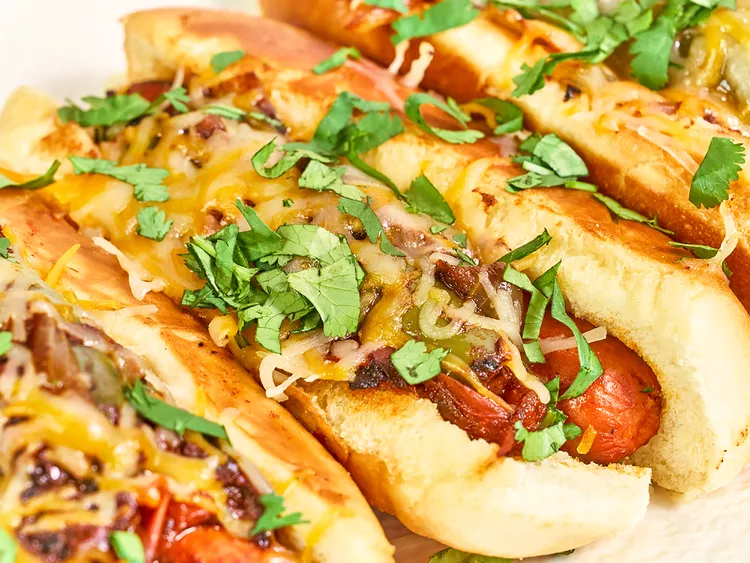

Famous Mexican Hotdogs

Description:
These famous Mexican hotdogs are sauteed with onions, tomatoes, and peppers, and tucked into buttery toasted buns with melted Mexican blend cheese.
Ingredients:
- 3 tablespoons bacon grease
- 8 beef hotdogs
- 1 1/2 large white onions, sliced
- 6 Roma tomatoes, cut into wedges
- 3 large jalapenos, halved
- 3 cloves garlic, smashed
- 1/4 teaspoon red pepper flakes
- 3 tablespoons butter, softened
- 8 hotdog buns
- 1 cup Mexican blend shredded cheese, or as needed
Steps:
- Using a knife, make a 1/8-inch slice lengthwise down each hotdog; set aside.
- Heat bacon grease in a 12-inch cast iron skillet over medium-high heat. Add hot dogs, onion, tomatoes, jalapeno, garlic, and red pepper flakes to the skillet and cook until the vegetables have softened and everything is well browned, about 10 minutes, stirring occasionally.
- Meanwhile, heat a second skillet over medium heat. Spread a thin layer of butter on the outside of each hotdog bun, and cook, turning occasionally, until lightly toasted on all sides.
- Divide hot dogs and vegetables evenly among toasted buns and top with cheese. Allow cheese to melt and serve immediately.